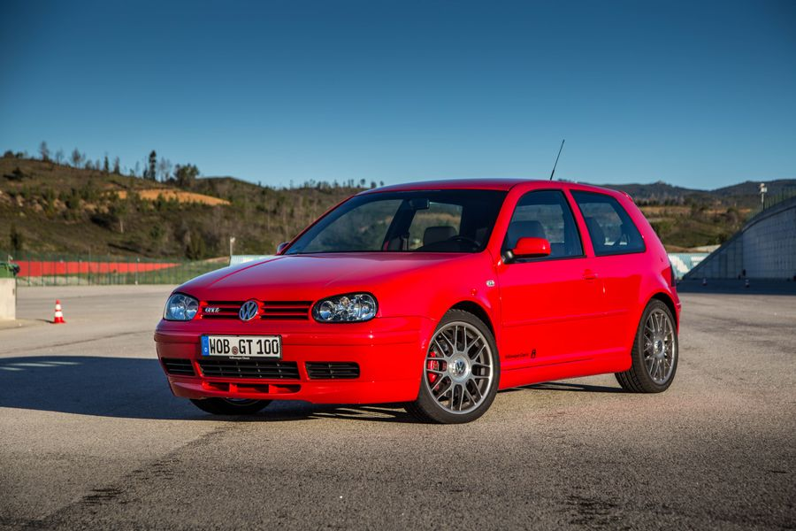

The MK4 GTI

- VR6, 1.8T
- 5 speed manual or 4 speed automatic
- 3036lbs.(VR6), 2674lbs.(1.8T)
- 174 horsepower, 178 horsepower
- 173lbft torque, 173lbft torque
The MK4 GTI was released in 1997 and succeeded the MK3 GTI. The MK4 continued with the new rounder styling that the MK3 had, with bigger taillights and a comparable front end. The MK4 once again borrowed the engines of its predecessor, using both the 2.0 16 valve and the VR6. These two engines would be replaced, however, by the new and superior 1.8T. The 1.8T was a turbocharged inline 4 20 valve engine with dual overhead camshafts making about 178hp and 173lbft of torque. Despite the similar power output with the VR6, the 1.8T was significantly lighter, and gave the car a better power to weight ratio.

Mark 4 GTI